공조냉동기계산업기사 (2020-08-22 기출문제)
1과목: 공기조화
1. 덕트의 설계순서로 옳은 것은?
- 송풍량 결정 → 취출구 및 흡입구의 위치 결정 → 덕트경로 결정 → 덕트치수 결정
- 취출구 및 흡입구의 위치 결정 → 덕트경로 결정 → 덕트치수 결정 → 송풍량 결정
- 송풍량 결정 → 취출구 및 흡입구의 위치 결정 → 덕트치수 결정 → 덕트경로 결정
- 취출구 및 흡입구의 위치 결정 → 덕트치수 결정 → 덕트경로 결정 → 송풍량 결정
(정답률: 64%)

2. 공조공간을 작업 공간과 비작업 공간으로 나누어 전체적으로는 기본적인 공조만 하고,작업공간에서는 개인의 취향에 맞도록 개별공조하는 방식은?
- 바닥취출 공조방식
- 테스크 앰비언트 공조방식
- 저온공조방식
- 축열공조방식
(정답률: 76%)
3. 다음의 공기선도상에 수분의 증가 없이 가열 또는 냉각되는 경우를 나타낸 것은?
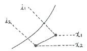
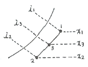
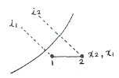
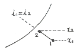
(정답률: 71%)
4. 냉각코일의 용량결정 방법으로 옳은 것은?
- 실내취득열량+기기로부터의 취득열량+재열부하+외기부하
- 실내취득열량+기기로부터의 취득열량+재열부하+냉수펌프부하
- 실내취득열량+기기로부터의 취득열량+재열부하+배관부하
- 실내취득열량+기기로부터의 취득열량+재열부하+냉수펌프 및 배관부하
(정답률: 71%)
5. 외기의 온도가 -10℃이고 실내온도가 20℃이며 벽 면적이 25m2일 때, 실내의 열 손실량(kW)은? (단, 벽체의 열관류율 10W/m2ㆍK, 방위계수는 북향으로 1.2이다.)
- 7
- 8
- 9
- 10
(정답률: 56%)
6. 다음과 같은 공기선도상의 상태에서 CF(Contact Factor)를 나타내고 있는 것은?
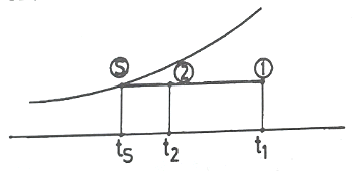
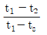
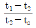
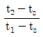
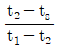
(정답률: 56%)
7. 공기조화 부하계산을 위한 고려사항으로 가장 거리가 먼 것은?
- 열원방식
- 실내 온⋅습도의 설정조건
- 지붕재료 및 치수
- 실내 발열기구의 사용시간 및 발열량
(정답률: 59%)
8. 다음 중 흡수식 감습장치에 일반적으로 사용되는 액상흡수제로 가장 적절한 것은?
- 트리에틸렌글리콜
- 실리카겔
- 활성알루미나
- 탄산소다수용액
(정답률: 65%)
9. 공기 중의 수증기 분압을 포화압력으로 하는 온도를 무엇이라 하는가?
- 건구온도
- 습구온도
- 노점온도
- 글로브(globe)온도
(정답률: 60%)
10. 다음 중 공기조화 설비와 가장 거리가 먼 것은?
- 냉각탑
- 보일러
- 냉동기
- 압력탱크
(정답률: 67%)
11. 대류 난방과 비교하여 복사난방의 특징으로 틀린 것은?
- 환기 시에는 열손실이 크다.
- 실의 높이에 따른 온도편차가 크지 않다.
- 하자가 발생하였을 때 위치확인이 곤란하다.
- 열용량이 크므로 부하에 즉각적인 대응이 어렵다.
(정답률: 61%)
12. 실내 압력은 정압상태로 주로 작은 용적의 연소실 등과 같이 급기량을 확실하게 확보하기 어려운 장소에 적용하기에 가장 적합한 환기방식은?
- 압입 흡출 병용 환기
- 압입식 환기
- 흡출식 환기
- 풍력 환기
(정답률: 64%)
13. 온풍난방에 관한 설명으로 틀린 것은?
- 예열부하가 거의 없으므로 기동시간이 아주 짧다.
- 온풍을 이용하므로 쾌감도가 좋다.
- 보수⋅취급이 간단하여 취급에 자격이 필요하지 않다.
- 설치면적이 적으며 설치 장소도 제약을 받지 않는다.
(정답률: 71%)
14. 온수난방 방식의 분류에 해당되지 않는 것은?
- 복관식
- 건식
- 상향식
- 중력식
(정답률: 70%)
15. 다음 취득 열량 중 잠열이 포함되지 않는 것은?
- 인체의 발열
- 조명기구의 발열
- 외기의 취득열
- 증기 소독기의 발생열
(정답률: 68%)
16. 다음 중 표면 결로발생 방지조건으로 틀린 것은?
- 실내측에 방습막을 부착한다.
- 다습한 외기를 도입하지 않는다.
- 실내에서 발생되는 수증기량을 억제한다.
- 공기와의 접촉면 온도를 노점온도 이하로 유지한다.
(정답률: 70%)
17. 제습장치에 대한 설명으로 틀린 것은?
- 냉각식 제습장치는 처리공기를 노점온도 이하로 냉각시켜 수증기를 응축시킨다.
- 일반 공조에서는 공조기에 냉각코일을 채용하므로 별도의 제습장치가 없다.
- 제습방법은 냉각식, 흡수식, 흡착식으로 구분된다.
- 에어와셔 방식은 냉각식으로 소형이고 수처리가 편리하여 많이 채용된다.
(정답률: 60%)
18. 난방설비에 관한 설명으로 옳은 것은?
- 온수난방은 온수의 현열과 잠열을 이용한 것이다.
- 온풍난방은 온풍의 현열과 잠열을 이용한 직접난방 방식이다.
- 증기난방은 증기의 현열을 이용한 대류난방이다.
- 복사난방은 열원에서 나오는 복사에너지를 이용한 것이다.
(정답률: 68%)
19. 다음 중 축류 취출구의 종류가 아닌 것은?
- 노즐형
- 펑커루버형
- 베인격자형
- 팬형
(정답률: 48%)
20. 겨울철 외기조건이 2℃(DB), 50%(RH), 실내조건이 19℃(DB),5 0%(RH)이다. 외기와 실내공기를 1:3으로 혼합 할 경우 혼합공기의 최종온도(℃)는?
- 5.3
- 10.3
- 14.8
- 17.3
(정답률: 49%)
2과목: 냉동공학
21. 표준 냉동사이클에 대한 설명으로 옳은 것은?
- 응축기에서 버리는 열량은 증발기에서 취하는 열량과 같다.
- 증기를 압축기에서 단열압축하면 압력과 온도가 높아진다.
- 팽창밸브에서 팽창하는 냉매는 압력이 감소함과 동시에 열을 방출한다.
- 증발기 내에서의 냉매증발온도는 그 압력에 대한 포화온도보다 낮다.
(정답률: 57%)
22. 컴파운드(compound)형 압축기를 사용한 냉동방식에 대한 설명으로 옳은 것은?
- 증발기가 2개 이상 있어서 각 증발기에 압축기를 연결하여 필요에 따라 다른 온도에서 냉매를 증발시킬 수 있는 방식
- 냉매를 한 가지만 쓰지 않고 두 가지 이상을 써서 각 냉매에 압축기를 설치하여 낮은 온도를 얻을 수 있게 하는 방식
- 한쪽 냉동기의 증발기가 다른 쪽 냉동기의 응축기를 냉각시키도록 각각의 사이클에 독립된 압축기를 배열하는 방식
- 동일한 냉매에 대해 1대의 압축기로 2단 압축을 하도록 하여 고압의 냉매를 사용하여 냉동을 수행하는 방식
(정답률: 57%)
23. 방열벽을 통해 실외에서 실내로 열이 전달될 때, 실외측 열전달계수가 0.02093kW/m2ㆍK, 실내측 열전달 계수가 0.00814kW/m2ㆍK, 방열벽 두께가 0.2m, 열 전도도가 5.8 x 10-5kW/mK일 때, 총괄열전달계수(kW/m2K)는?
- 1.54×10-3
- 2.77×10-4
- 4.82×10-4
- 5.04×10-3
(정답률: 49%)
24. 냉동효과에 관한 설명으로 옳은 것은?
- 냉동효과란 응축기에서 방출하는 열량을 의미한다.
- 냉동효과는 압축기의 출구 엔탈피와 증발기의 입구 엔탈피 차를 이용하여 구할 수 있다.
- 냉동효과는 팽창밸브 직전의 냉매 액온도가 높을수록 크며, 또 증발기에서 나오는 냉매증기의 온도가 낮을수록 크다.
- 냉매의 과 냉각도를 증가시키면 냉동효과는 커진다.
(정답률: 57%)
25. 조건을 참고하여 흡수식 냉동기의 성적계수는 얼마인가?
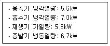
- 0.88
- 1.16
- 1.34
- 1.52
(정답률: 55%)
26. 다음 압축기의 종류 중 압축 방식이 다른 것은?
- 원심식 압축기
- 스크류 압축기
- 스크롤 압축기
- 왕복동식 압축기
(정답률: 56%)
27. 터보 압축기에서 속도 에너지를 압력으로 변화시키는 역할을 하는 것은?
- 임펠러
- 베인
- 증속기어
- 스크류
(정답률: 63%)
28. 노즐에서 압력 1764kPa, 온도 300℃인 증기를 마찰이 없는 이상적인 단열 유동으로 압력 196kPa 까지 팽창시킬 때 증기의 최종속도(m/s)는? (단, 최초 속도는 매우 작아 무시하고,입출구의 높이는 같으며 단열 열낙차는 442.3kJ/kg로 한다.)
- 912.1
- 940.5
- 946.5
- 963.3
(정답률: 34%)
29. 압축기 직경이 100mm,행정이 850mm, 회전수 2000rpm, 기통수 4일 때 피스톤 배출량(m3/h)은?
- 3204.4
- 3316.2
- 3458.8
- 3567.1
(정답률: 41%)
30. 1RT(냉동톤)에 대한 설명으로 옳은 것은?
- 0℃ 물 1kg을 0℃ 얼음으로 만드는데 24시간 동안 제거해야 할 열량
- 0℃ 물 1ton을 0℃ 얼음으로 만드는데 24시간 동안 제거해야 할 열량
- 0℃ 물 1kg을 0℃ 얼음으로 만드는데 1시간 동안 제거해야 할 열량
- 0℃ 물 1ton을 0℃ 얼음으로 만드는데 1시간 동안 제거해야 할 열량
(정답률: 69%)
31. 일반적으로 대용량의 공조용 냉동기에 사용되는 터보식 냉동기의 냉동부하 변화에 따른 용량제어 방식으로 가장 거리가 먼 것은?
- 압축기 회전식 가감법
- 흡입 가이드 베인 조절법
- 클리어런스 증대법
- 흡입 댐퍼 조절법
(정답률: 56%)
32. 피스톤 압출량이 500m3/h인 암모니아 압축기가 그림과 같은 조건으로 운전되고 있을 때 냉동능력(kW)은 얼마인가? (단, 체적효율은 0.68이다)
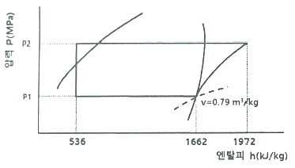
- 101.8
- 134.6
- 158.4
- 182.1
(정답률: 42%)
33. 다음 중 증발온도가 저하 되었을 때 감소되지 않는 것은? (단, 응축온도는 일정하다.)
- 압축비
- 냉동능력
- 성적계수
- 냉동효과
(정답률: 59%)
34. 표준 냉동사이클에서 냉매액이 팽창밸브를 지날 때 상태량의 값이 일정한 것은?
- 엔트로피
- 엔탈피
- 내부에너지
- 온도
(정답률: 64%)
35. 실제기체가 이상기체의 상태식을 근사적으로 만족하는 경우는?
- 압력이 높고 온도가 낮을수록
- 압력이 높고 온도가 높을수록
- 압력이 낮고 온도가 높을수록
- 압력이 낮고 온도가 낮을수록
(정답률: 63%)
36. 암모니아 냉동기에서 암모니아가 누설되는 곳에 페놀프탈렌인 시험지를 대면 어떤 색으로 변하는가?
- 적색
- 청색
- 갈색
- 백색
(정답률: 56%)
37. 냉장고의 증발기에 서리가 생기면 나타나는 현상으로 옳은 것은?
- 압축비 감소
- 소요동력 감소
- 증발압력 감소
- 냉장고 내부온도 감소
(정답률: 50%)
38. 냉매의 구비조건으로 틀린 것은?
- 동일한 냉동능력을 내는 경우에 소요동력이 적을 것
- 증발잠열이 크고 액체의 비열이 작을 것
- 액상 및 기상의 점도는 낮고 열전도도는 높을 것
- 임계온도가 낮고 응고온도는 높을 것
(정답률: 55%)
39. 열 이동에 대한 설명으로 틀린 것은?
- 서로 접하고 있는 물질의 구성분자 사이에 정지상태에서 에너지가 이동하는 현상을 열전도라 한다.
- 고온의 유체분자가 고체의 전열면까지 이동하여 열에너지를 전달하는 현상을 열대류라 한다.
- 물체로부터 나오는 전자파 형태로 열이 전달되는 전열작용을 열복사라 한다.
- 열관류율이 클수록 단열재로 적당하다.
(정답률: 64%)
40. 다음 중 프로온계 냉동장치의 배관재료로 가장 적당한 것은?
- 철
- 강
- 동
- 마그네슘
(정답률: 69%)
3과목: 배관일반
41. 주철관에 관한 설명으로 틀린 것은?
- 압축강도,인장강도가 크다.
- 내식성ㆍ내마모성이 우수하다.
- 충격치, 휨강도가 작다.
- 보통 급수관, 배수관, 통기관에 사용된다.
(정답률: 50%)
42. 평면상의 변위 뿐만 아니라 입체적인 변위까지도 안전하게 흡수하므로 어떤 형상의 신축에도 배관이 안전하며 증기, 물, 기름 등의 2.9MPa 압력과 220℃ 정도까지 사용할 수 있는 신축이음쇠는?
- 스위블형 신축 이음쇠
- 슬리브형 신축 이음쇠
- 볼조인트형 신축 이음쇠
- 루프형 신축 이음쇠
(정답률: 45%)
43. 냉매배관 시공 시 유의사항으로 틀린 것은?
- 팽창밸브 부근에서의 배관길이는 가능한 짧게 한다.
- 지나친 압력강하를 방지한다.
- 암모니아 배관의 관이음에 쓰이는 패킹재료는 천연고무를 사용한다.
- 두 개의 입상관 사용 시 트랩은 가능한 크게 한다.
(정답률: 64%)
44. 냉온수 배관을 시공할 때 고려해야 할 사항으로 옳은 것은?
- 열에 의한 온수의 체적팽창을 흡수하기 위해 신축이음을 한다.
- 기기와 관의 부식을 방지하기 위해 물을 자주 교체한다.
- 열에 의한 배관의 신축을 흡수하기 위해 팽창관을 설치한다.
- 공기체류장소에는 공기빼기밸브를 설치한다.
(정답률: 61%)
45. 수액기를 나온 냉매액은 팽창밸브를 통해 교축되어 저온 저압의 증발기로 공급된다.팽창밸브의 종류가 아닌 것은?
- 온도식
- 플로트식
- 인젝터식
- 압력자동식
(정답률: 55%)
46. 펌프에서 물을 압송하고 있을 때 발생하는 수격작용을 방지하기 위한 방법으로 틀린 것은?
- 급격한 밸브 개폐는 피한다.
- 관내의 유속을 빠르게 한다.
- 기구류 부근에 공기실을 설치한다.
- 펌프에 플라이 휠을 설치한다.
(정답률: 70%)
47. 냉매 배관 중 액관은 어느 부분인가?
- 압축기와 응축기까지의 배관
- 증발기와 압축기까지의 배관
- 응축기와 수액기까지의 배관
- 팽창밸브와 압축기까지의 배관
(정답률: 57%)
48. 다음 중 가스배관의 크기를 결정하는 요소로 가장 거리가 먼 것은?
- 관의 길이
- 가스의 비중
- 가스의 압력
- 가스 기구의 종류
(정답률: 62%)
49. 다음의 배관도시 기호 중 유체의 종류와 기호의 연결로 틀린 것은?
- 공기-A
- 수증기-W
- 가스-G
- 유류-O
(정답률: 70%)
50. 일반도시가스사업 가스공급시설 중 배관설비를 건축물에 고정부착할 때, 배관의 호칭지름이 13mm이상 33mm미만인 경우 몇 m 마다 고정장치를 설치해야 하는가?
- 1
- 2
- 3
- 5
(정답률: 59%)
51. 다음 그림에서 ㉠과 ㉡의 명칭으로 바르게 설명된 것은?
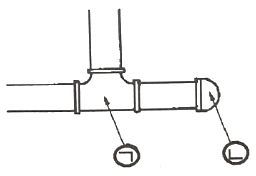
- ㉠ : 크로스, ㉡ : 트랩
- ㉠ : 소켓, ㉡ : 캡
- ㉠ : 90° Y티, ㉡ : 트랩
- ㉠ : 티, ㉡ : 캡
(정답률: 72%)
52. 급탕배관에 관한 설명으로 설명으로 틀린 것은?
- 건물의 벽 관통부분 배관에는 슬리브(sleeve)를 끼운다.
- 공기빼기 밸브를 설치한다.
- 배관의 기울기는 중력순환식인 경우 보통 1/150으로 한다.
- 직선 배관 시에는 강관인 경우 보통 60m마다 1개의 신축이음쇠를 설치한다.
(정답률: 63%)
53. 각개통기방식에서 트랩 위어(weir)로부터 통기관 까지의 구배로 가장 적절한 것은?
- 1/25 ~ 1/50
- 1/50 ~ 1/100
- 1/100 ~ 1/150
- 1/150 ~ 1/200
(정답률: 52%)
54. 배수 트랩의 봉수깊이로 가장 적당한 것은?
- 30 ~ 50mm
- 50 ~ 100mm
- 100 ~ 150mm
- 150 ~ 200mm
(정답률: 55%)
55. 배관길이 200m, 관경 100mm의 배관 내 20℃의 물을 80℃로 상승시킬 경우 배관의 신축량(mm)은? (단, 강관의 선팽창계수는 11.5x10-6m/m℃이다.)
- 138
- 13.8
- 104
- 10.4
(정답률: 30%)
56. 다음 중 공기 가열기나 열교환기 등에서 다량의 응축수를 처리하는 경우에 가장 적합한 트랩은?
- 버킷 트랩
- 플로트 트랩
- 온도조절식 트랩
- 열역학적 트랩
(정답률: 49%)
57. 증기난방에서 환수주관을 보일러 수면보다 높은 위치에서 설치하는 배관방식은?
- 습식 환수관식
- 진공 환수식
- 강제 순환식
- 건식 환수관식
(정답률: 50%)
58. 배관이 바닥이나 벽을 관통할 때 설치하는 슬리브(sleeve)에 관한 설명으로 틀린 것은?
- 슬리브의 구경은 관통배관의 지름보다 충분히 크게 한다.
- 방수층을 관통할 때는 누수방지를 위해 슬리브를 설치하지 않는다.
- 슬리브를 설치하여 관을 교체하거난 수리할 때 용이하게 한다.
- 슬리브를 설치하여 관의 산축에 대응할 수 있다.
(정답률: 58%)
59. 다음 중 신축이음쇠의 종류에 해당하지 않는 것은?
- 슬리브형
- 벨로즈형
- 루프형
- 턱걸이형
(정답률: 65%)
60. 배관의 KS 도시기호 중 틀린 것은?
- 고압 배관용 탄소강관 - SPPH
- 보일러 및 열교환기용 탄소 강관 - STBH
- 기계구조용 탄소 강관 - SPTW
- 압력 배관용 탄소 강관 -SPPS
(정답률: 59%)
4과목: 전기제어공학
61. 어떤 회로에 10A의 전류를 흘리기 위해서 300W의 전력이 필효하다면,이 회로의 저항(Ω)은 얼마인가?
- 3
- 10
- 15
- 30
(정답률: 53%)
62. 목표치가 정해져 있으며, 입⋅출력을 비교하여 신호전달 경로가 반드시 폐루프를 이루고 있는 제어는?
- 조건제어
- 시퀀스제어
- 피드백제어
- 프로그램제어
(정답률: 58%)
63. 그림의 신호흐름 선도에서 C(s)/R(s)의 값은?
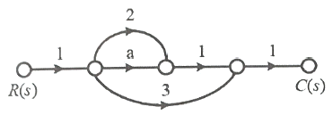
- a+2
- a+3
- a+5
- a+6
(정답률: 59%)
64. 피드백제어의 특성에 관한 설명으로 틀린 것은?
- 정확성이 증가한다.
- 대역폭이 증가한다.
- 계의 특성변화에 대한 입력 대 출력비의 감도가 증가한다.
- 구조가 비교적 복잡하고 오픈루프에 비해 설치비가 많이 든다.
(정답률: 51%)
65. 동작 틈새가 가장 많은 조절계는?
- 비례동작
- 2위치 동작
- 비례 미분 동작
- 비례 적분 동작
(정답률: 57%)
66. R-L-C 직렬회로에서 소비전력이 최대가 되는 조건은?
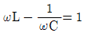
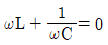
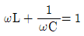
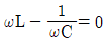
(정답률: 51%)
67. 그림과 같은 유접점 회로의 논리식과 논리회로명칭으로 옳은 것은?
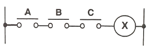
- X=A+B+C, OR 회로
- X=A⋅B⋅C, AND 회로
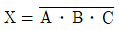
, NOT 회로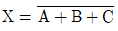
, NOR 회로
(정답률: 57%)
68. 접지 도체 P1, P2, P3의 각 접지저항이 R1, R2, R3이다. R1의 접지저항(Ω)을 계산하는 식은? (단, R12=R1+R2, R23=R2+R3, R31=R3+R1이다.)
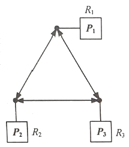
- R1=1/2(R12+R31+R23)
- R1=1/2(R31+R23-R12)
- R1=1/2(R12-R31+R23)
- R1=1/2(R12+R31-R23)
(정답률: 49%)
69. 유도전동기의 고정손에 해당하지 않는 것은?
- 1차권선의 저항손
- 철손
- 베어링 마찰손
- 풍손
(정답률: 51%)
70. 목표값이 미리 정해진 시간적 변화를 하는 경우 제어량을 그것에 추종시키기 위한 제어는?
- 프로그램제어
- 정치제어
- 추종제어
- 비율제어
(정답률: 41%)
71. 맥동 주파수가 가장 많고 맥동률이 가장 적은 정류방식은?
- 단상 반파정류
- 단상 브리지 정류회로
- 3상 반파정류
- 3상 전파정류
(정답률: 53%)
72. 다음 블록선도에서 전달함수 C(s)/R(s)는?
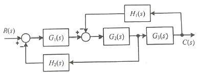
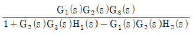
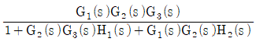
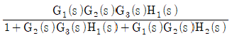
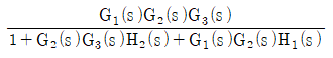
(정답률: 45%)
73. 다음 회로에서 합성 정전용량(F)의 값은?
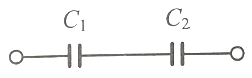
- C0=C1+C2
- C0=C1-C2
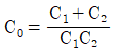
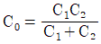
(정답률: 50%)
74. 주파수 60Hz의 정현파 교류에서 위상차 π/6(rad)은 약 몇 초의 시간 차인가?
- 1×10-3
- 1.4×10-3
- 2×10-3
- 2.4×10-3
(정답률: 46%)
75. 블럭선도에서 요소의 신호전달 특성을 무엇이라 하는가?
- 가합요소
- 전달요소
- 동작요소
- 인출요소
(정답률: 60%)
76. 오픈 루프 전달함수가
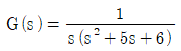
인 단위궤환계에서 단위계단입력을 가하였을때의 잔류편차는?- 5/6
- 6/5
- ∞
- 0
(정답률: 40%)
77. 다음 그림은 무엇을 나타낸 논리연산회로인가?
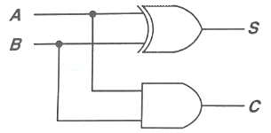
- HALF-ADDER회로
- FULL-ADDER회로
- NAND회로
- EXCLUSIVE OR회로
(정답률: 58%)
78. 권선형 3상 유도전동기에서 2차저항을 변화시켜 속도를 제어하는 경우,최대토크는 어떻게 되는가?
- 최대 토크가 생기는 점의 슬립에 비례한다.
- 최대 토크가 생기는 점의 슬립에 반비례한다.
- 2차저항에만 비례한다.
- 항상 일정하다.
(정답률: 39%)
79. 시스템의 전달함수가
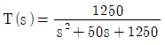
으로 표현되는 2차제어시스템의 고유 주파수는 몇rad/sec인가?- 35.36
- 28.87
- 25.62
- 20.83
(정답률: 28%)
80. 계전기 접점의 아크를 소거할 목적으로 사용되는 소자는?
- 바리스터(Varistor)
- 바렉터다이오드
- 터널다이오드
- 서미스터
(정답률: 62%)